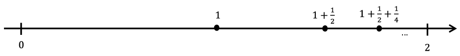

Section 7.1 Sequences of Real Numbers
In
Chapter 4, we developed the equation
\(1+x+x^2+x^3+\cdots=\frac{1}{1-x}\text{,}\) and we mentioned there were limitations to this power series representation. For example, substituting
\(x=1\) and
\(x=-1\) into this expression leads to
\begin{equation*}
1+1+1+\cdots=\frac{1}{0} \text{ and } 1-1+1-1+\cdots=\frac{1}{2}\
\end{equation*}
which are rather hard to accept. On the other hand, if we substitute \(x=\frac{1}{2}\) into the expression we get \(1+\frac{1}{2}+\left(\frac{1}{2}\right)^2+\left(\frac{1}{2}\right)^3+\cdots=2\) which seems more palatable until we think about it. We can add two numbers together by the method we all learned in elementary school. Or three. Or any finite set of numbers, at least in principle. But infinitely many? What does that even mean? Before we can add infinitely many numbers together we must find a way to give meaning to the idea.
To do this, we examine an infinite sum by thinking of it as a sequence of finite partial sums. In our example, we would have the following sequence of partial sums.
\begin{equation*}
\left(1,1+\frac{1}{2},1+\frac{1}{2}+\left(\frac{1}{2}\right)^2,1+ \frac{1}{2}+\left(\frac{1}{2}\right)^3,\ldots,\sum_{j=0}^n\left(\frac{1}{2} \right)^j,\ldots\right)\text{.}
\end{equation*}
We can plot these sums on a number line to see what they tend toward as \(n\) gets large.

Since each partial sum is located at the midpoint between the previous partial sum and \(2\text{,}\) it is reasonable to suppose that these sums tend to the number 2. Indeed, you probably have seen an expression such as \(\lim_{n\rightarrow\infty}\) \(\left(\sum_{j=0}^n\left(\frac{1}{2}\right)^j\right)=2\) justified by a similar argument. Of course, the reliance on such pictures and words is fine if we are satisfied with intuition. However, we must be able to make these intuitions rigorous without relying on pictures or nebulous words such as “approaches.”
No doubt you are wondering “What’s wrong with the word ‘approaches’? It seems clear enough to me.” This is often a sticking point. But if we think carefully about what we mean by the word “approach” we see that there is an implicit assumption that will cause us some difficulties later if we don’t expose it.
To see this consider the sequence \(\left(1,\frac12,\frac13,\frac14,\ldots\right)\text{.}\) Clearly it “approaches” zero, right? But, doesn’t it also “approach” \(-1?\) It does, in the sense that each term gets closer to \(-1\) than the one previous. But it also “approaches” \(-2\text{,}\) \(-3\text{,}\) or even \(-1000\) in the same sense. That’s the problem with the word “approaches.” It just says that we’re getting closer to something than we were in the previous step. It does not tell us that we are actually getting close. Since the moon moves in an elliptical orbit about the earth for part of each month it is “approaching” the earth. The moon gets closer to the earth but, thankfully, it does not get close to the earth. The implicit assumption we alluded to earlier is this: When we say that the sequence \(\left(\frac1n\right)_{n=1}^\infty\) “approaches” zero we mean that it is getting close not closer. Ordinarily this kind of vagueness in our language is pretty innocuous. When we say “approaches” in casual conversation we can usually tell from the context of the conversation whether we mean “getting close to” or “getting closer to.” But when speaking mathematically we need to be more careful, more explicit, in the language we use.
So how can we change the language we use so that this ambiguity is eliminated? Let’s start out by recognizing, rigorously, what we mean when we say that a sequence converges to zero. For example, you would probably want to say that the sequence \(\left(1,\frac{1}{2},\frac{1}{3},\frac{1}{4},\,\ldots\right)=\left( \frac{1}{n}\right)_{n=1}^\infty\) converges to zero. Is there a way to give this meaning without relying on pictures or intuition?
One way would be to say that we can make \(\frac{1}{n}\) as close to zero as we wish, provided we make \(n\) large enough. But even this needs to be made more specific. For example, we can get \(\frac{1}{n}\) to within a distance of \(.1\) of \(0\) provided we make \(n>10\text{,}\) we can get \(\frac{1}{n}\) to within a distance of \(.01\) of \(0\) provided we make \(n>100\text{,}\) etc. After a few such examples it is apparent that given any arbitrary distance \(\eps>0\text{,}\) we can get \(\frac{1}{n}\) to within \(\eps\) of \(0\) provided we make \(n>\frac{1}{\eps}\text{.}\) This leads to the following definition.
Definition 7.1.1.
Let \(\left(s_n\right)=\left(s_1,s_2,s_3,\ldots\right)\) be a sequence of real numbers. We say that \(\left(\boldsymbol{s}_{\boldsymbol{n}}\right)\) converges to 0 and write \(\lim_{n\rightarrow\infty}s_n=0\) provided for any \(\eps>0\text{,}\) there is a real number \(N\) such that if \(n>N\text{,}\) then \(|s_n|\lt \eps\text{.}\)
This definition is the formal version of the idea we just talked about; that is, given an arbitrary distance \(\eps\text{,}\) we must be able to find a specific number \(N\) such that \(s_n\) is within \(\eps\) of \(0\text{,}\) whenever \(n>N\text{.}\) The \(N\) is the answer to the question of how large is “large enough” to put \(s_n\) this close to \(0\text{.}\)
Even though we didn’t need it in the example \(\left(\frac{1}{n}\right)\text{,}\) the absolute value appears in the definition because we need to make the distance from \(s_n\) to 0 smaller than \(\eps\text{.}\) Without the absolute value in the definition, we would be able to “prove” such outrageous statements as \(\lim_{n\rightarrow\infty}-n=0\text{,}\) which we obviously don’t want.
The statement
\(|s_n|\lt \eps\) can also be written as
\(-\eps\lt s_n\lt \eps\) or
\(s_n\in\left(-\eps,\eps\right)\text{.}\) (See the
Problem 7.1.2 below.) Any one of these equivalent formulations can be used to prove convergence. Depending on the application, one of these may be more advantageous to use than the others.
Any time an \(N\) can be found that works for a particular \(\eps\text{,}\) any number \(M>N\) will work for that \(\eps\) as well, since if \(n>M\) then \(n>N\text{.}\)
Problem 7.1.2.
Let \(a\) and \(b\) be real numbers with \(b>0\text{.}\) Prove \(|a|\lt b\) if and only if \(-b\lt a\lt b\text{.}\) Notice that this can be extended to \(|a|\leq b\) if and only if \(-b\leq a\leq b\text{.}\)
To illustrate how this definition makes the above ideas rigorous, let’s use it to prove that \(\displaystyle\lim_{n\rightarrow\infty}\frac{1}{n}=0\text{.}\)
Proof.
Let \(\eps>0\) be given. Let \(N=\frac{1}{\eps}\text{.}\) If \(n>N\text{,}\) then \(n>\frac{1}{\eps}\) and so \(|\frac{1}{n}|=\frac{1}{n}\lt \eps\text{.}\) Hence by definition, \(\lim_{n\rightarrow\infty}\frac{1}{n}=0\text{.}\)
Notice that this proof is rigorous and makes no reference to vague notions such as “getting smaller” or “approaching infinity.” It has three components:
provide the challenge of a distance \(\eps>0\text{,}\)
identify a real number \(N\text{,}\) and
show that this \(N\) works for this given \(\eps\text{.}\)
There is also no explanation about where \(N\) came from. While it is true that this choice of \(N\) is not surprising in light of the “scrapwork” we did before the definition, the motivation for how we got it is not in the formal proof nor is it required. In fact, such scrapwork is typically not included in a formal proof. For example, consider the following.
Example 7.1.3.
Use the definition of convergence to zero to prove
\begin{equation*}
\lim_{n\rightarrow\infty}\frac{\sin n}{n}=0\text{.}
\end{equation*}
Proof.
Let \(\eps>0\text{.}\) Let \(N=\frac{1}{\eps}\text{.}\) If \(n>N\text{,}\) then \(n>\frac{1}{\eps}\) and \(\frac{1}{n}\lt \eps\text{.}\) Thus \(\abs{\frac{\sin(n)}{n}}\leq\frac{1}{n}\lt \eps\text{.}\) Hence by definition, \(\lim_{n\rightarrow\infty}\frac{\sin n}{n}=0\text{.}\)
Notice that the \(N\) came out of nowhere, but you can probably see the thought process that went into this choice: We needed to use the inequality \(\abs{\sin n}\leq 1\text{.}\) Again this scrapwork is not part of the formal proof, but it is typically necessary for finding what \(N\) should be. You might be able to do the next problem without doing any scrapwork first, but don’t hesitate to do scrapwork if you need it.
Problem 7.1.4.
Use the definition of convergence to zero to prove the following.
(a)
\(\displaystyle\lim_{n\rightarrow\infty}\frac{1}{n^2}=0\)
(b)
\(\displaystyle\lim_{n\rightarrow\infty}\frac{1}{\sqrt{n}}=0\)
As the sequences get more complicated, doing scrapwork ahead of time will become more necessary.
Example 7.1.5.
Use the definition of convergence to zero to prove
\begin{equation*}
\lim_{n\rightarrow\infty}\frac{n+4}{n^2+1}=0\text{.}
\end{equation*}
SCRAPWORK
Given an \(\eps>0\text{,}\) we need to see how large to make \(n\) in order to guarantee that \(|\frac{n+4}{n^2+1}|\lt \eps\text{.}\) First notice that \(\frac{n+4}{n^2+1}\lt \frac{n+4}{n^2}\text{.}\) Also, notice that if \(n>4\text{,}\) then \(n+4\lt n+n=2n\text{.}\) So as long as \(n>4\text{,}\) we have \(\frac{n+4}{n^2+1}\lt \frac{n+4}{n^2}\lt \frac{2n}{n^2}=\frac{2}{n}\text{.}\) We can make this less than \(\eps\) if we make \(n>\frac{2}{\eps}\text{.}\) This means we need to make \(n>4\) and \(n>\frac{2}{\eps}\text{,}\) simultaneously. These can be done if we let \(N\) be the maximum of these two numbers. This sort of thing comes up regularly, so the notation \(N=\max\left(4,\frac{2}{\eps}\right)\) was developed to mean the maximum of these two numbers. Notice that if \(N=\max\left(4, \frac{2}{\eps}\right)\) then \(N\geq 4\) and \(N\geq\frac{2}{\eps}\text{.}\) We’re now ready for the formal proof.
Proof.
Let \(\eps>0\text{.}\) Let \(N=\max\left(4,\frac{2}{\eps}\right)\text{.}\) If \(n>N\text{,}\) then \(n>4\) and \(n>\frac{2}{\eps}\text{.}\) Thus we have \(n>4\) and \(\frac{2}{n}\lt \eps\text{.}\) Therefore
\begin{equation*}
\abs{\frac{n+4}{n^2+1}}=\frac{n+4}{n^2+1}\lt \frac{n+4}{n^2}\lt \frac{2n}{n^2}= \frac{2}{n}\lt \eps\text{.}
\end{equation*}
Hence by definition, \(\displaystyle\lim_{n\rightarrow\infty}\frac{n+4}{n^2+1}=0\text{.}\)
Again we emphasize that the scrapwork is not explicitly a part of the formal proof. However, if you look carefully, you can always find the scrapwork in the formal proof.
Problem 7.1.6.
Use the definition of convergence to zero to prove
\begin{equation*}
\lim_{n\rightarrow\infty}\frac{n^2+4n+1}{n^3}=0.{}
\end{equation*}
Problem 7.1.7.
Let \(b\) be a nonzero real number with \(|b|\lt 1\) and let \(\eps>0\text{.}\)
(a)
Solve the inequality \(|b|^n\lt \eps\) for \(n\)
(b)
Use part (a) to prove \(\lim_{n\rightarrow\infty}b^n=0\text{.}\)
We can negate this definition to prove that a particular sequence does not converge to zero.
Example 7.1.8.
Use the definition to prove that the sequence
\begin{equation*}
\left(1+(-1)^n\right)_{n=0}^\infty=(2,0,2,0,2,\ldots)
\end{equation*}
does not converge to zero.
Before we provide this proof, let’s analyze what it means for a sequence \(\left(s_n\right)\) to not converge to zero. Converging to zero means that any time a distance \(\eps>0\) is given, we must be able to respond with a number \(N\) such that \(|s_n|\lt \eps\) for every \(n>N\text{.}\) To have this not happen, we must be able to find some \(\eps>0\) such that no choice of \(N\) will work. Of course, if we find such an \(\eps\text{,}\) then any smaller one will fail to have such an \(N\text{,}\) but we only need one to mess us up. If you stare at the example long enough, you see that any \(\eps\) with \(0\lt
\eps\leq 2\) will cause problems. For our purposes, we will let \(\eps=2\text{.}\)
Proof.
Let \(\eps=2\) and let \(N\in\NN\) be any integer. If we let \(k\) be any non-negative integer with \(k>\frac{N}{2}\text{,}\) then \(n=2k>N\text{,}\) but \(|1+(-1)^n|=2\text{.}\) Thus no choice of \(N\) will satisfy the conditions of the definition for this \(\eps\text{,}\) (namely that \(|1+(-1)^n|\lt 2\) for all \(n>N\)) and so \(\lim_{n\rightarrow\infty}\left(1+(-1)^n\right)\neq 0\text{.}\)
Problem 7.1.9.
Negate the definition of \(\lim_{n\rightarrow\infty}s_n=0\) to provide a formal definition for \(\lim_{n\rightarrow\infty}s_n\neq 0\text{.}\)
Problem 7.1.10.
Use the definition to prove \(\lim_{n\rightarrow\infty}\frac{n}{n+100}\neq 0\text{.}\)
Now that we have a handle on how to rigorously prove that a sequence converges to zero, let’s generalize this to a formal definition for a sequence converging to something else. Basically, we want to say that a sequence \(\left(s_n\right)\) converges to a real number \(s\text{,}\) provided the difference \(\left(s_n-s\right)\) converges to zero. This leads to the following definition:
Definition 7.1.11.
Let \(\left(s_n\right)=\left(s_1,s_2,s_3,\ldots\right)\) be a sequence of real numbers and let \(s\) be a real number. We say that \(\left(\boldsymbol{s}_{\boldsymbol{n}}\right)\) {converges to} \(\boldsymbol{s}\) and write \(\lim_{n\rightarrow\infty}s_n=s\) provided for any \(\eps>0\text{,}\) there is a real number \(N\) such that if \(n>N\text{,}\) then \(|s_n-s|\lt \eps\text{.}\)
Clearly
\begin{equation*}
\lim_{n\rightarrow\infty}s_n=s \text{ if and only if } \lim_{n\rightarrow\infty}\left(s_n-s\right)=0\text{.}
\end{equation*}
Again notice that this says that we can make \(s_n\) as close to \(s\) as we wish (within \(\eps\)) by making \(n\) large enough (\(>N)\text{.}\) As before, this definition makes these notions very specific.
-
Notice that \(|s_n-s|\lt \eps\) can be written in the following equivalent forms
\(\displaystyle |s_n-s|\lt \eps\)
\(\displaystyle -\eps\lt s_n-s\lt \eps\)
\(\displaystyle s-\eps\lt s_n\lt s+\eps\)
\(\displaystyle s_n\in\left(s-\eps,s+\eps\right)\)
and we are free to use any one of these which is convenient at the time.
As an example, let’s use this definition to prove that the sequence in
Problem 7.1.10, in fact, converges to 1.
Example 7.1.12.
Prove \(\displaystyle\lim_{n\rightarrow\infty}\frac{n}{n+100}=1\text{.}\)
SCRAPWORK
Given an \(\eps>0\text{,}\) we need to get \(\abs{\frac{n}{n+100}-1}\lt \eps\text{.}\) This prompts us to do some algebra.
\begin{equation*}
\left|\frac{n}{n+100}-1\right|=\left|\frac{n-(n+100)}{n+100}\right|\leq\frac{100}{n}\text{.}
\end{equation*}
This in turn, seems to suggest that \(N=\frac{100}{\eps}\) should work.
Proof.
Let \(\eps>0\text{.}\) Let \(N=\frac{100}{\eps}\text{.}\) If \(n>N\text{,}\) then \(n>\frac{100}{\eps}\) and so \(\frac{100}{n}\lt \eps\text{.}\) Hence
\begin{equation*}
\left|\frac{n}{n+100}-1\right|=\left|\frac{n-(n+100)}{n+100}\right|= \frac{100}{n+100}\lt \frac{100}{n}\lt \eps\text{.}
\end{equation*}
Thus by definition \(\lim_{n\rightarrow\infty}\frac{n}{n+100} =1\text{.}\)
Notice again that the scrapwork is not part of the formal proof and the author of a proof is not obligated to tell where the choice of \(N\) came from (although the thought process can usually be seen in the formal proof). The formal proof contains only the requisite three parts: provide the challenge of an arbitrary \(\eps>0\text{,}\) provide a specific \(N\text{,}\) and show that this \(N\) works for the given \(\eps\text{.}\)
Also notice that given a specific sequence such as \(\left(\frac{n}{n+100}\right)\text{,}\) the definition does not indicate what the limit would be if, in fact, it exists. Once an educated guess is made as to what the limit should be, the definition only verifies that this intuition is correct.
This leads to the following question: If intuition is needed to determine what a limit of a sequence should be, then what is the purpose of this relatively non-intuitive, complicated definition?
Remember that when these rigorous formulations were developed, intuitive notions of convergence were already in place and had been used with great success. This definition was developed to address the foundational issues. Could our intuitions be verified in a concrete fashion that was above reproach? This was the purpose of this non-intuitive definition. It was to be used to verify that our intuition was, in fact, correct and do so in a very prescribed manner. For example, if \(b>0\) is a fixed number, then you would probably say as \(n\) approaches infinity, \(b^{\left(\frac{1}{n}\right)}\) approaches \(b^0=1\text{.}\) After all, we did already prove that \(\lim_{n\rightarrow\infty}\frac{1}{n}=0\text{.}\) We should be able to back up this intuition with our rigorous definition.
Problem 7.1.13.
Let \(b>0\text{.}\) Use the definition to prove \(\limit{n}{\infty}{b^{\left(\frac{1}{n}\right)}}=1\text{.}\)
Hint.You will probably need to separate this into two cases: \(0\lt b\lt 1\) and \(b\geq 1\text{.}\)
Problem 7.1.14.
(a)
Provide a rigorous definition for \(\limit{n}{\infty}{s_n}\neq s\text{.}\)
(b)
Use your definition to show that for any real number \(a\text{,}\) \(\limit{n}{\infty}{\left(\left(-1\right)^n\right)}\neq a\text{.}\)
Hint.Choose \(\eps=1\) and use the fact that \(\Big|a-(-1)^n\Big|\lt 1\) is equivalent to \(\left(-1\right)^n-1\lt a\lt \left(-1\right)^n+1\) to show that no choice of \(N\) will work for this \(\eps\text{.}\)